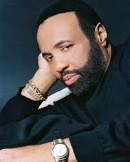
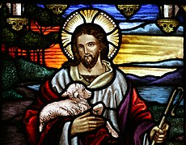

|
|
|
|
Soon and very soon, We are going to see the King, Verse 2 |
|
|
|
|
|
|
|


https://youtu.be/AC7lUy4BHuA -
https://youtu.be/NDMRRSCEb6Y
Soon and Very Soon 快了，非常近了
Hymn Information
Scripture References
Further Reflections on Scripture References
This text is filled with exuberant joy and eschatological hope. This song revels in the promise of paradise – eternal communion with the King – where there will be no more hurting or crying or dying.
Confessions and Statements of Faith References
Further Reflections on Confessions and Statements of Faith References
Heidelberg Catechism, Lord’s Day 19, Question and Answer 52 professes that “in all distress and persecution, with uplifted head, I confidently await the very judge who has already offered himself to the judgment of God in my place and removed the whole curse from me. Christ will cast all his enemies and mine into everlasting condemnation, but will take me and all his chosen ones to himself into the joy and glory of heaven.”
Our World Belongs to God, paragraph 57 describes what believers can expect
to experience: “…We will see our Savior face to face…he will set all things
right…we face that day without fear for the Judge is our Savior whose shed
blood declares us righteous. We live confidently, anticipating his
coming...”
Hymn Story/Background
Author and Composer Information

Southern Gospel: Andrae Crouch's 'Soon And Very Soon'

February 02, 2015
Soon And Very Soon History
The song 'Soon And Very soon is based on Revelation 21:3-4: “And I heard a loud voice from the throne saying, ‘Look! God’s dwelling place is now among the people, and he will dwell with them. They will be his people, and God himself will be with them and be their God. He will wipe every tear from their eyes. There will be no more death or mourning or crying or pain, for the old order of things has passed away.’” (KJV) .
This is definitely the wish of all Christians that this coming should really be soon and very soon as we are really tired of this world. Come, Lord Jesus.
Soon and Very Soon Video
It is now time to watch and listen to a very famous Southern Gospel song composed by the late Andrae Crouch in 1978.
分享: facebook PLURK twitter
Soon and very soon, my King is coming
快了，非常近了，我的王要再來。
Robed in righteousness and crowned with love
正義為袍及用愛為冠冕
When I see Him, I shall be made like Him
當我得見他，我要學像他
Soon and very soon
近了，非常近
Soon and very soon I’ll be going
近了，非常近，我將會去
To the place He has prepared for me
他為我預備的地方
There my sin erased
在那裡，我的罪被擦去。
My shame forgotten
我的羞辱被忘記
Soon and very soon
近了，非常近
I will be with the One I love
我會與那一位，我愛
With unveiled face I’ll see Him
用面紗所覆的面孔，我會得見他
There my soul will be satisfied
在那裡我的靈會被滿足的
Soon and very soon
近了，非常近
Soon and very soon see the procession
近了，非常近，見到(天使天軍的)行列
The angels and the elders ’round the throne
那些天使，及年長的先行者圍繞御座
At His feet I’ll lay my crowns, my worship
在他的足前，我會放下我的(驕傲)，獻上我的敬拜
Soon and very soon
近了，非常近
I will be with the One I love
我會與那一位，我愛
With unveiled face I’ll see Him
用面紗所覆的面孔，我會得見他
There my soul will be satisfied
在那裡，我的靈會被滿足
Soon and very soon
近了，非常近
Though I have not seen Him
即使我現在未曾見到他
My heart knows Him well
我的心知道他是尚好
Jesus Christ the Lamb
耶穌基督神羔羊
The Lord of heaven
天堂的主
I will be with the One I love
我會與那一位，我愛
With unveiled face I’ll see Him
用面紗所覆的面孔，我會得見他
There my soul will be satisfied
在那裡，我的靈會被滿足
Soon and very soon
近了，非常近
Soon and very soon
近了，非常近
Soon and very soon
近了，非常近
耶穌再臨（Second Advent或Parousia）[編輯]
| 耶穌 |
|---|
|
 |
|
{kind=link}
| 基督教末世論 | ||
|---|---|---|
|
||
|
||
|
||
|
||
|
||
|
||
|
||
|
||
|
||
|
||
|
||
| Portal:基督教 | ||
耶穌再臨（有時稱為第二次降臨或基督再臨，英文Second Advent或Parousia）是一個基督教概念。二千年前，耶穌「第一次來到」，然後耶穌升天。耶穌再臨是指他在未來將回到人間。這個信仰是基於正典福音書中的彌賽亞預言，它是大多基督教末世論的一部分。不同的教派和基督徒對耶穌再臨的性質有不同的看法。
《尼西亞信條》包含以下聲明：「他升天，坐在全能父上帝的右邊；將來必從那裡降臨，審判活人與死人。我信聖靈；我信聖而公之教會；我信聖徒相通；我信罪得赦免，我信身體復活；我信永生。阿們！」
術語[編輯]
幾個不同的術語用來指基督再臨：
主顯[編輯]
在新約中，主顯（希臘詞：ἐπιφάνεια）用了五次，用來指基督回歸。[1]
基督再臨[編輯]
新約中，基督再臨（希臘詞：παρουσία，意為「到達」，「到來」或「顯現」）使用二十四次，其中十七次是關於基督的。[2]這個詞也用於指其他個體——例如，「司提反、福徒拿都和亞該古」（哥林多前書16：17）；提多（哥林多後書6：6-72）和使徒保羅（哥林多後書10:10；腓利門書1:26，2:12）；也有一次指代「這不法的人」（帖後 2：9）。
希臘詞parousia的詞源是para（在……旁邊）和ousia（到來）。在英語中，「parousia」有一種特殊的基督教意味。[3]
定義[編輯]
Joseph Henry Thayer詞典將「基督再臨」定義為《史特朗經文彙編》的G3952：
……在新約中，[這個詞]特別指基督再臨，即作為彌賽亞的耶穌在未來從天上返回，復活死者，舉行最後的審判，正式而榮耀地建立神的國。[2]
Bauer-Danker詞彙的定義是：
……基督在這個時代的終結時總是彌賽亞一樣帶著榮耀降臨，審判這個世界。
天主教百科全書的《一般判決》指出：[4]
在新約中，基督再臨是一個常常不斷重複的教義。救主自己不僅預言了這個事件，而且形象地描繪了其情況（馬太福音24:27，見「橄欖山話語」；馬太福音，見「國家的審判」）。使徒們在他們傳道（使徒行傳10：42）和作品中（羅馬書2：5-16; 14:10；林前4：5；林後5:10；提摩後4：1；帖後1：5；雅各書5：7）給予了這個主題顯赫的地位。除了基督再臨，或再臨哥林多前書15:23，帖後2：2：1-9）這兩個詞語外，耶穌再臨也稱為主顯、顯現、出現和啟示。第二次來臨的時間被稱為「那日」（提後4：8）「主的日子」（帖前5：2），「基督耶穌的日子」（腓立比書1：6） ，「人子顯現的日子」（路加福音17:30）和「末日」（約翰福音6：39-40）。
古斯塔夫·阿道夫·德斯曼（Gustav Adolf Deissmann，1908）[5]指出，希臘詞parousia早在公元前3世紀就已出現，用來描述了國王或君主訪問城市——這是安排好訪問，以向人們展示到訪者的尊貴。科林斯和帕特雷城市為尼祿的到訪鑄造了羅馬硬幣，這說明了希臘語的「Parousia」和拉丁語的「Adventus」之間的對應，也說明了這兩個詞與和希臘詞「epiphany」（顯現）有著密切的關係。
基督教觀點中的耶穌再臨[編輯]
一世紀[編輯]
根據歷史學家查爾斯·弗里曼（Charles Freeman），在耶穌死亡時期的那代基督徒期望耶穌在他們在世時返回，但是，耶穌沒有再臨的事實讓早期的基督教團體感到驚訝。[6]
小子們哪，如今是末時了。你們曾聽見說那敵基督的要來，現在已經有好些敵基督的出來了；從此，我們就知道如今是末時了。
——《約翰一書》2:18
末世預言實現論[編輯]
末世預言實現論是將基督再臨與一世紀事件（如公元70年耶路撒冷和猶太聖殿的毀滅）聯繫在一起的立場。[7]
支持這個觀點的人認為，「人子榮耀再臨」主要在耶穌釘十字架時實現了。他們相信，末世的跡象已經實現了，包括「日頭要變黑了」，[8]「天勢都要震動」，[9]和「那時，他們要看見人子有大能力、大榮耀駕雲降臨」。[10]但是，有些批評家指出，這遺漏了許多東西，例如，聖經說「但主的日子要像賊來到一樣。那日，天必大有響聲廢去，有形質的都要被烈火銷化，地和其上的物都要燒盡了。」（《彼得後書》3:10）[11]「那時，人子的兆頭要顯在天上，地上的萬族都要哀哭。他們要看見人子有能力、有大榮耀駕著天上的雲降臨。」（《馬太福音》24:30）[12]
此外，耶穌據說告訴門徒，「我實在告訴你們：這世代還沒有過去，這些事都要成就」（《馬太福音》24:34；馬可福音13:30；路加福音21:32）。鑑於耶穌在下一節中指出他也不知道確切的日子和時間，因此，他這句話的簡單含義是，這個景象將由同時代的人來見證。一些人學者，如Jerome，認為「這世代」意味著猶太民族的命運；然而，其他學者認為，如果耶穌指的是「民族」，那麼他使用的詞語會是genos（民族），而不是genea（世代）。[13]
天主教和東正教[編輯]
《尼西亞信經》包含以下聲明：「祂升了天，坐在聖父的右邊。祂還要光榮地降來，審判生者死者，祂的神國萬世無疆。 我信聖神，祂是主及賦予生命者，由聖父聖子所共發。祂和聖父聖子，同受欽崇，同享光榮，祂曾藉先知們發言。 我信唯一、至聖、至公、從宗徒傳下來的教會。 我承認赦罪的聖洗，只有一個。 我期待死人的復活，及來世的生命。 亞孟。」
早期教會保存下來的羅馬天主教徒和東正教基督的傳統觀點認為，耶穌來臨將是一個突然而明確的事件，就像「閃電」一樣（《瑪竇福音》24:27）他們持有的一般觀點是：耶穌不會在人間花費太多時間來事工或傳道。[14]他們還認為，敵基督的事工將在耶穌再臨前發生。[14]
東正教的會外人士亞歷山大·卡洛米羅斯（Alexander Kalomiros）解釋了原來教會關於在火河[15]和反對虛假聯盟[16]的耶穌再臨的觀點，他認為，那些相信基督將在地上統治一千年的人「並不是在等待基督，而是等候敵基督的人。」耶穌作為王而重回人間的觀念是教會的一個異端概念，它相當於「猶太人的期望，這些猶太人希望彌賽亞是一個人間之王。」相反，教會教導一開始就在教導基督不會回到人間，因為，耶穌復活所建立的是天國，是新耶路撒冷。
新教[編輯]
新教許多教派對基督再來的確切細節有不同看法。只有少數基督教組織聲稱對那些通常充滿象徵性和預言性的聖經文本出處具有權威解釋。
對耶穌再臨的簡單提及出現在尼西亞信經中：「他將來必有大榮耀，再降臨，審判活人死人。他的國無窮無盡」類似的聲明也在聖經中保羅的信條中。（哥林多前書15:23）。
一些新教教會認為，信仰的奧秘是：「基督死了，復活了，他會再來。」[17]
基督教奧秘主義教義[編輯]
在玫瑰十字會的奧秘主義基督教教義中，在宇宙的基督（或外在的基督）和內在的基督之間有著明確區別。[18]根據這個傳統，內在的基督被視為真正的救主，它需要在每個個體內心重生[19]，以在地球的以太層面（即身體）的未來第六時代中演進，即朝著「新天堂和新人間——新加利利」進化。[20]基督的第二次來臨並不是以身體的形式到來，[21]而是在以太層面中來到每個個體的新的靈魂體中，[22]在這個層面中，人「將被捲入雲中，與空中的主見面。」[23]這個事件的「日子和時間」是未知的。[24]基督教奧秘主義傳統的教義認為，這首先將有一個準備期，這時太陽逐步進入水瓶座，這是一個占星術概念：即，將要到來的水瓶座時代。[25]
摩門教[編輯]
耶穌基督後期聖徒教會（摩門教）對於《啟示錄》中所記載的跡象有特別而具體的解釋。[26]他們的經文認為，基督將會如同聖經所說的一樣再臨。他們的教會也教導說：「當救主再次來到時，他會以權能和榮耀到來，將世界認領為他的國度，他的第二次來臨將標誌著新千年的開始。第二次來臨對於邪惡者將是一個可怕的、可悲的時刻，但是，這對於義人將是平安的日子。」[27]
基督復臨安息日會[編輯]
基督復臨安息日會的基本信仰＃25寫道：
基督復臨是教會有福的指望，是福音最高的境界。救主的降臨是真實的，祂要親自降臨，是肉眼能見、普世性的。祂復臨時，死去的義人將要復活，並與活著的義人一同得榮耀，被接到天上。但那不義的人則要死亡。大多數的預言幾乎都完全應驗，目前的世界情況更顯明，基督復臨已經迫近。但那時辰尚未啟示我們，因此我們要隨時準備好。（提多書2:13；希伯來書9:28；約翰福音14：1-3；使徒行傳1：9-11；馬太福音24:14；啟示錄1：7；馬太福音24：43,44：1；帖前4：13-18；哥林多前書：15：51-54; 2 ；帖前：1：7-10；2：8；啟示錄 14：14-20; 19：11-21；馬太福音24；馬可福音 13；路加福音 21 ; 2 ；提後 3：1-5；帖前5：1-6。）[28]
耶和華見證人[編輯]
耶和華見證人很少使用「耶穌再臨」一詞，而喜歡用「降臨」（presence）一詞來翻譯parousia（基督再臨）。[29]他們認為，在馬太福音24：37-39和路加福音17：26-30中，耶穌比較了「人子的降臨」與「挪亞進方舟的那日」，這說明了這是一段持續的時間，而不是在某個時刻到來。[30]他們還認為，聖經年表指出，1914年是基督的「降臨」的開始，這個降臨不斷進行，直到末日審判的最後戰鬥（哈米吉多頓）。[31]與這個時段相關的其它聖經表達包括「末時」（但以理書12：4），「世界的末了」（馬太福音13：40,49; 24：3）和「末日」 （提後3：1；彼得前書3：3）。[32]耶和華見證人相信基督的千禧年統治在末日最後戰鬥（哈米吉多頓）之後開始。[33]
基督教基要派[編輯]
最近調查顯示，約40％的美國人相信基督很可能在2050年前再臨。58％的白人福音派基督徒，32％的天主教信徒和27％的白人新教主流派信徒相信基督再臨。[34]
由於傳教士德懷特·萊曼·穆迪的傳播，相信基督再臨在美國十九世紀後期變得非常流行。並且千禧年前論成為20世紀20年代基督教基要派信仰的核心教條之一。
拉斯塔法里教[編輯]
在拉斯塔法里教的早期發展中，海爾·塞拉西一世（衣索比亞皇帝）被認為是大衛家族的一員，被崇拜為神的化身，人們稱他為是「黑耶穌」和「黑色彌賽亞」。據說，馬科斯·加維在塞拉西加冕前夕宣揚了黑色彌賽亞的到來。由於這個預言，塞拉西是牙買加貧窮的和未受教育的基督徒靈感來源，他們相信皇帝將會把黑人從歐洲殖民者的奴役中解放出來。[35]
末日的欺詐[編輯]
一些基督教作品認為，在基督再臨之前會發生很嚴重的偽騙。在《馬太福音》24章中，耶穌說：
那時，若有人對你們說『基督在這裡』，或說『基督在那裡』，你們不要信。 因為假基督、假先知將要起來，顯大神跡、大奇事，倘若能行，連選民也就迷惑了。
——《馬太福音》24:23，24
早期基督復臨安息日會的領袖Ellen G. White寫道：
在欺騙的重大場景中，撒但會給自己加冕，偽裝為基督。教會長期以來一直自稱尋求救主再臨，以實現人們的希望。現在，狡猾的欺騙者會讓人們以為基督出現了。在世界每個地方，撒但將在人間顯現為一個光彩奪目而又威嚴的人，類似約翰在啟示錄中所描述的神的兒子。（啟示錄1：13-15）。凡人眼中無法看穿他榮耀背後的本質。勝利的呼喊在空氣中迴響：「基督來了！基督來了！」人們匍匐在他面前敬拜他，他舉起手，為他們祝福，就像基督在人間時祝福門徒一樣。撒旦的聲音溫柔而柔和，但充滿了旋律。在溫柔、慈悲的聲調中，他說出了一些和救主一樣仁慈的、來自天堂的真理：他治癒人民的疾病，然後，他呈現出基督的品格，宣稱已經將安息日改到星期天，並命令所有人崇拜他所祝福的日子。
——《巨大的爭議》，第624頁 [36]
具體日期預測和觀點[編輯]
人們預測了許多基督再臨的具體日期，一些已經成為遙遠的過去，而另外一些仍在未來。
維克托·斯廷格（Victor J. Stenger）注意到，耶穌曾說道：「我實在告訴你們：站在這裡的，有人在沒嘗死味以前，必看見人子降臨在他的國里。」（《馬太福音》16:28）。他在福音書的另外五個地方做了類似的預測：馬可福音9：1，馬可福音13:30，馬太福音24:34，路加福音9:27，路加福音21:32。斯廷格爾看來，當耶穌預言的再臨沒有在門徒生命中發生時，基督教就將預言的重點變為復活以及對永生的承諾。[37]
其他觀點和看法[編輯]
巴哈伊信仰[編輯]
巴哈歐拉認為，基督的再臨被理解為神的道和神的靈的再現，這通過他的個人顯現出來。巴哈歐拉給教宗庇護九世寫信道：「上帝的到來是被雲彩遮蔽的……他真的再次從天上下來，甚至就像他第一次從天而降的樣子。請注意，你不要與他爭論，就像法利賽人沒有任何明確的態度和證據與他爭論一樣。」[38]他從而將自己稱為「亙古常在者」和「榮耀之筆」。[39]巴哈歐拉在這方面也說過：「這是以賽亞預言的天父和安慰者，與天父相關的聖靈已經與你們立約了。啊，主教們，張開你們的眼睛，你們可以看見你們的主坐在偉大而榮耀的寶座上。」[40]巴哈歐拉也寫道：「我們確實已經用自己的生命為你們的生命贖罪。唉，當我們再臨時，我們看見你們逃離我們，我慈愛的眼睛為我的子民身痛苦哭泣。」[39]巴哈伊信仰的追隨者認為，耶穌再臨的預言已經實現，並且彌勒（Maitreya）的預言和許多其他宗教的預言也已經實現，這是由巴孛於1844年開始實現的，然後由巴哈歐拉實現。他們通常將基督徒預言的實現與耶穌實現了猶太人的預言進行比較，在這兩種情況下，人們都期待著啟示性的觀點真的實現了。巴哈伊聲稱，基督以一個新的名字再臨，這與耶穌在福音書中說以利亞以施洗約翰的名字再臨相似。[41]
伊斯蘭教[編輯]
在伊斯蘭教中，耶穌被認為是真主的使者和彌賽亞，他被派來以新的經文《引支勒》來引導以色列人（banī isrā'īl)）。 [42]伊斯蘭教要求信仰耶穌（以及所有其他上帝的使者），這是作為穆斯林的要求。然而，穆斯林不承認耶穌是神的兒子，而只認為他是個先知。在古蘭經中，耶穌的再臨已經在《金飾章》中預示出來（古蘭經第43章），它是審判日的標誌。
（耶穌）必是（審判）時刻（到來的）跡象：因此，不要懷疑那個時刻，只要跟從我們：這是一條直路。 43:61 [43]
在伊本·卡西爾（Ibn Kathir）對古蘭經或「Tafsir al-Qur'an al-Azim」的有名解釋中，他也用這節經文作為古蘭經中描寫耶穌再臨的證明。 [44] 也有聖訓清楚地預言了耶穌在未來再臨，例如：[45]Sahih al-Bukhari，第3書，第43卷：「知識之書」（Kitab-ul-`Ilm），聖訓656：
這個時刻是在瑪利亞的兒子（即耶穌）作為一個公正統治者在你們中降臨才開始的，他將打破十字架，殺死豬，並廢除吉茲亞(人頭稅)。這時將有大量的錢，所以沒有人會（作為慈善禮物）收受。
根據伊斯蘭傳統，在伊斯蘭末世論中稱為伊斯蘭救世主的馬赫迪（字面意思：「正確的導師」）發動的反對旦扎里（意為「假先知」，與反基督同義）和他追隨者的戰爭中，耶穌將會再臨。[46]耶穌將在大馬士革以東一個白色的拱廊上下降，穿著黃色的長袍，他的頭已經受膏。然後他將與馬赫迪一起反對旦扎里。伊斯蘭教認為耶穌是穆斯林（服從上帝的人）和神的使者之一，他將遵守伊斯蘭教義。最後，耶穌會殺死敵基督的旦扎里，然後，所有的有經者都會信靠他。因此，那時將有一個團體，即伊斯蘭教。（Sahih Muslim, 41:7023）
布哈里聖訓3：43：656中的Abu Hurairah敘述道：安拉的使徒說：「這個時刻是在瑪利亞的兒子（即耶穌）作為一個公正統治者在你們中降臨才開始的，他將打破十字架，殺死豬，並廢除吉茲亞。這時將有大量的錢，所以沒有人會（作為慈善禮物）收受。」
在馬赫迪死後，耶穌將承擔領袖。在伊斯蘭的敘述中，這是一個普遍和平和正義的時代。伊斯蘭文本還提到了歌革和瑪各的出現，他們是古老的部落，將在人間分散，造成干擾。上帝答應了耶穌的禱告，在他們脖子上放一種蠕蟲，殺死他們。[46]耶穌的統治據說長達四十年左右，之後他將死亡（根據伊斯蘭教，耶穌沒有死在十字架上，而是被帶到天上，繼續活著，直到他第二次回來）。然後，穆斯林將為他舉行葬禮祈禱，並將他埋在麥地那市穆罕默德旁邊的空地中。[45]
阿赫邁底亞教派[編輯]
阿赫邁底亞派自稱是穆斯林，他們相信經上所承諾的馬赫迪和彌賽亞已經作為米爾扎·古拉姆·艾哈邁德（1835-1908年）本人而到來。許多穆斯林拒絕了這個觀點，他們認為阿赫邁底亞派不是穆斯林。
聖訓（伊斯蘭先知穆罕默德的話語）和聖經表明耶穌將在末日中回來。伊斯蘭傳統通常認為，耶穌在他第二次來臨時將是一個Ummati（穆斯林），是穆罕默德的追隨者，他將重振伊斯蘭教的真理，而不是培養一個新宗教。
阿赫邁底亞派解釋道，經上所預言的再臨的耶穌是一個「與耶穌相似」(mathīl-i ʿIsā)的人，而不是他身體的再臨，這就像在基督教中，施洗約翰與聖經先知以利亞的特徵相似一樣。阿赫邁底亞派認為，穆罕默德和基督教的宗教文本的預言在傳統中被誤解為拿撒勒耶穌自己會回來，並認為耶穌沒有在十字架上死去，而是活過來，他的死亡是自然死。艾哈邁迪斯認為，自己（這個教派的創始人）在性格和教導上都代表著耶穌；因此，他獲得了與耶穌同樣重要屬靈先知的地位。因此，阿赫邁底亞派認為這個預言已經通過米爾扎·古拉姆·艾哈邁德的教派實現了，並在繼續進行著。[47]
猶太教[編輯]
猶太教認為耶穌是偽猶太彌賽亞的聲稱者，因為他沒有完成任何彌賽亞的預言，這包括：
1，建造第三聖殿（以西結書37：26-28）。
2，聚集所有猶太人回到以色列的國土（以賽亞書43：5-6）。
3，帶來世界和平的時代，結束所有仇恨、壓迫、痛苦和疾病。正如經書上說：「這國不舉刀攻擊那國，他們也不再學習戰爭。」（以賽亞書2：4）
4，傳播以色列神的普世知識，從而將人類團結為一體。因為經上說：「耶和華必作全地的王；到那日，人人都承認耶和華是獨一無二的，他的名也是獨一無二的。」（撒迦利亞14：9）。[48]
關於基督教認為這些預言將在「耶穌再臨」中得到實現，Ohr Somayach說：「我們認為這是一個捏造的答案，因為在《希伯來聖經》中沒有提到耶穌再臨；第二，為什麼上帝不能在第一次中完成他的目標？」[49]拉比大衛·沃爾佩（David Wolpe）認為，耶穌再臨「來源於真正的失望」，耶穌再臨是由基督徒發明的，以在神學上彌補耶穌的死亡。
帕拉宏撒·尤迦南達[編輯]
在現代，一些傳統印度宗教領袖已經開始接受耶穌作為神的化身。我們看到，寫了《一個瑜伽行者的自傳》的印度大師帕拉宏撒·尤迦南達在2004年出版的上下冊《耶穌再臨：在你內心的基督復活》中大量地評論了福音書。[50]這本書提供了一種對基督再臨的神秘主義觀點，它認為基督再臨是一種內在經驗，是發生在個人內心的事件。在這本書的介紹中，尤迦南達寫道，真正的耶穌再臨是你內心無限的基督意識在心中復活。路加福音書中也提到：「人不能說：『看哪！在這裡』，或說：『在那裡』；因為 神的國就在你們裡面。」（路加福音17:21）
大亞·馬塔（Daya Mata）在《基督再臨》的序言中寫道，「我們可以說，帕拉宏撒·尤迦南達對經文的兩卷本解釋體現了他的神聖使命：即，將耶穌基督所教導的原初基督教精華展示給世界。」在回憶她記錄他話語的時刻，她說道：「這位偉大的大師與拿撒勒的耶穌直接而私人地團契在一起，而得到了福音書教導的啟示。當他記錄這些被啟示的話語時，他容光煥發，滿帶歡喜。」[50]醫學博士拉里·多西（Larry Dossey）寫道，「帕拉宏撒·尤迦南達的《基督再臨》是對耶穌現存教義的最重要分析之一……許多別的對耶穌話語的解釋分裂了人、文化和國家；但他這些解釋促進了人們的團結和融合，這就是為什麼它們對當今世界是至關重要的。」[51]
耶穌再臨在現代文化中[編輯]
耶穌再臨出現在很多電影和書本中，例如：
- Black Jesus - Comedy Central Adult Swim Television Series (2014- ) created by Aaron McGruder and Mike Clattenburg, tells the story of Jesus living in modern-day Compton, California, and his efforts to spread love and kindness on a daily basis. He is supported in his mission by a small-but-loyal group of downtrodden followers, while facing conflicts involving corrupt preachers, ethnic tensions, and the hate spreading activities of the manager of his apartment complex.
- Left Behind - Film- and book-franchise (1995- ) built by Tim LaHaye and Jerry B. Jenkins based on the time-period before, during and after the Second Coming of Christ.
- The Seventh Sign - 1988 film starring Demi Moore about a pregnant lady who discovers the Second Coming of Christ has rented a room from her, in order to begin the countdown that will trigger the Apocalypse.
- End of Days - 1999 action-adventure film starring Arnold Schwarzenegger about a policeman who must stop Satan before he ends the world.
- SCARS: Christian Fiction End-Times Thriller by Patience Prence - 2010 novel about a girl named Becky who struggles through the time of the Great Tribulation.
- At the End of All Things by Stony Graves - 2011 novel about the days following the Rapture, and right before the Final War between God and Satan.
- The Second Coming: A Love Story by Scott Pinsker - 2014 novel about two men who claim to be the Second Coming of Christ. Each claims that the other is a liar - but only one is telling the truth.
- Thief In the Night by William Bernard Sears - The popular TV and radio personality plays the role of a detective in writing a book about identifying the clues and symbols from the Biblical prophecies of the return of the Christ that have been overlooked or misunderstood, and settles on a shocking conclusion (2002) [1961]. Oxford, UK: George Ronald. ISBN 0-85398-008-X.
- Mr. Robot - USA Network television series (2015- ), uses visual and verbal references to biblical figures and events based on The Second Coming.
Andraé Crouch (1942 – 2015)
|
Andraé Crouch
|
|
|---|---|

Crouch in 2008
|
|
| Background information | |
| Birth name | Andraé Edward Crouch |
| Born |
July 1, 1942 San Francisco, California, U.S. |
| Died |
January 8, 2015 (aged 72) Los Angeles, California, U.S. |
| Genres | Gospel, contemporary Christian |
| Occupation(s) |
|
| Instruments | Vocals, piano, organ |
| Years active | 1966–2014 |
| Labels | |
| Associated acts | |
| Website | Andraé Crouch on Facebook |
Andraé Edward Crouch /ˈɑːndreɪ/ (July 1, 1942 – January 8, 2015) was an American gospel singer, songwriter, arranger, record producer and pastor. Referred to as "the father of modern gospel music" by contemporary Christian and gospel music professionals,[1] Crouch was known for his compositions "The Blood Will Never Lose Its Power", "My Tribute (To God Be the Glory)" and "Soon and Very Soon". He collaborated on some of his recordings with famous and popular artists such as Stevie Wonder, El DeBarge, Philip Bailey, Chaka Khan, and Sheila E., as well as the vocal group Take 6, and many popular artists covered his material, including Bob Dylan, Barbara Mandrell, Paul Simon, Elvis Presley and Little Richard.[2] In the 1980s and 1990s, he was known as the "go-to" producer for superstars who sought a gospel choir sound in their recordings; he appeared on a number of recordings, including Michael Jackson's "Man In the Mirror", Madonna's "Like a Prayer", and "The Power", a duet between Elton John and Little Richard.[3] Crouch was noted for his talent of incorporating contemporary secular music styles into the gospel music he grew up with. His efforts in this area helped pave the way for early American contemporary Christian music during the 1960s and 1970s.[4]
Crouch's original music arrangements were heard in the films The Color Purple, for which he received an Oscar nomination, and Disney's The Lion King, as well as the NBC television series Amen. Awards and honors received by him include seven Grammy Awards, induction into the Gospel Music Hall of Fame in 1998, and a star on the Hollywood Walk of Fame.[4]
Early years[edit]
Andraé Edward Crouch was born, along with his twin sister, Sandra, on July 1, 1942, in San Francisco, California[5] to parents Benjamin and Catherine (née Hodnett) Crouch.[6] His father was a minister in the Church of God in Christ (COGIC) and pastored Christ Memorial Church of God in Christ in Pacoima, California. When he was young, Crouch's parents owned and operated Crouch Cleaners, a dry-cleaning business, as well as a restaurant business in Los Angeles, California.[7] In addition to running the family's businesses, Crouch's parents also had a Christian street-preaching ministry and a hospital and prison ministry.[8] When Crouch was 11, his father was invited to speak for several weeks at a small church as a guest preacher. Crouch's father and the church's congregation encouraged the young boy to play during the services. At the piano, Crouch found the key in which the congregation was singing and started to play. After this, Crouch honed his piano-playing skills and, in time, wanted to write his own music. When he was 14 years old, he wrote his first Gospel song.[3][9][10]
Career[edit]
Groups[edit]
Crouch's first group musical effort was formed in 1960 as the Church of God in Christ Singers. The group included future recording artist and session musician Billy Preston on keyboards[6] and was the first to record Crouch's song "The Blood Will Never Lose Its Power". The song's popularity grew following the initial 1969 recording, becoming a standard in churches and hymnals worldwide.[4] While attending Valley Junior College in the San Fernando Valley to become a teacher, he formed gospel music group "The Disciples" in 1965 with fellow musicians Perry Morgan, Reuben Fernandez, and Bili Thedford.[11] The group became a frequent attraction at "Monday Night Sing" concerts in southern California put on by Audrey Mieir, a Christian minister and music composer who frequently sponsored new Christian music groups.[10] Following Mieir's introduction of Crouch to Manna Music Publishing's founders Tim and Hal Spencer, Manna published Crouch's song "The Blood Will Never Lose Its Power", written when he was 15 years old. The Spencers helped launch Crouch's recording career by introducing them to Light Records founder and prolific Christian songwriter Ralph Carmichael. After the addition of Sherman Andrus to The Disciples, Light Records recorded and released the group's first album, Take the Message Everywhere, in 1968.[12] Following the group's first album release, Crouch's twin sister, Sandra, joined The Disciples in 1970 after Fernandez' departure. Two more albums would follow, Keep On Singin'[13] and Soulfully, before a major change in the group's lineup in 1972.[14]
When Sherman Andrus left the Disciples to join the Imperials, he was replaced by singer Danniebelle Hall. More musicians were being added and the group's membership by the early 1970s included Fletch Wiley on trumpet, Harlan Rogers on keyboards, Hadley Hockensmith on bass, and Bill Maxwell on drums.[10] The group appeared on The Tonight Show Starring Johnny Carson in 1972[10] and to sold-out crowds at Carnegie Hall in 1975 and 1979.[15] Crouch's most popular songs with the group included "The Blood Will Never Lose Its Power", "Through It All", "Bless His Holy Name", "Soon and Very Soon", "Jesus is the Answer", and "My Tribute".
Solo career[edit]
After The Disciples disbanded in 1979, Crouch continued on with a solo career. His backing ensemble included Howard Smith, Linda McCrary, Táta Vega, and Kristle Murden, along with The Andraé Crouch Singers. Joe Sample, Wilton Felder, Dean Parks, David Paich, Phillip Bailey, Stevie Wonder, El DeBarge, and other secular artists were included in Crouch's recording sessions. With former Disciples drummer-turned-producer Bill Maxwell, Crouch co-produced projects for The Winans, Danniebelle Hall, and Kristle Murden. Many musical acts and solo performers covered his more popular works, including Elvis Presley with "I've Got Confidence". In 1986, Crouch composed the theme music for the Sherman Hemsley sitcom Amen, sung by Vanessa Bell Armstrong.
In 2006 Crouch released Mighty Wind, a 40th anniversary album featuring guest performances by Lauren Evans, Crystal Lewis, Karen Clark Sheard, Táta Vega, and Marvin Winans.
Influence[edit]
Crouch has been credited as a key figure in Jesus music of the 1960s and 1970s and, as a result, helping to bring about contemporary Christian music into the church.[16] As well, he is also credited with helping to bridge the gap between black and white Christian music and revolutionizing the sound of urban Gospel music. Though sometimes criticized for diluting the Christian message by using contemporary music styles, his songs have become staples in churches and hymnals around the world and have been recorded by mainstream artists such as Elvis Presley and Paul Simon.[6]
His affiliation with Light Records was instrumental in bringing Walter and Tramaine Hawkins, Jessy Dixon and The Winans to the label, from where they all enjoyed successful gospel music careers.[17]
In 1996, Crouch and his music were honored on the Grammy Award-winning CD, Tribute: The Songs of Andraé Crouch, released by Warner Bros. Records. The album featured a wide range of artists performing Crouch's classic songs and featured the Brooklyn Tabernacle Choir, Take 6, Twila Paris, and Michael W. Smith.[18]
Crouch and his sister Sandra had a friendship and music relationship with Michael Jackson.[19] In 1987, the Andraé Crouch Choir sang background vocals along with Siedah Garrett and The Winans on Jackson's hit single "Man in the Mirror" from the Bad album. The Andraé Crouch Singers were also featured on the songs "Keep the Faith" and "Will You Be There" from Jackson's 1991 Dangerous album. On Jackson's HIStory: Past, Present and Future, Book I project in 1995, the Andraé Crouch Choir is heard on "Earth Song." They are also heard on "Morphine" from HIStory's remix album Blood on the Dance Floor: HIStory in the Mix, and one last time on "Speechless" from the Invincible album. Crouch's composition, "Soon and Very Soon" was performed by the Andraé Crouch Choir at the public memorial service for Jackson held at the Staples Center in Los Angeles on July 7, 2009.[20]
Personal life[edit]
On November 12, 1982, Crouch was arrested in Los Angeles for possession of cocaine after being stopped for erratic driving. Sheriff's deputies discovered a substance in the vehicle which Crouch said was instant chicken soup powder. After consenting to a search, he was found to be carrying a vial of cocaine in his pocket. Crouch was arrested and released several hours later on $2,500 bail, maintaining the drugs belonged to a friend who had been staying in his apartment. Police declined to press charges.[21][22]
Between 1993 and 1994, Crouch suffered the loss of his father, mother, and older brother.[6] After his father's death, Crouch and his sister took over the shared duty of senior pastor at the church his parents founded, Christ Memorial Church of God in Christ in Pacoima, California.[6][23]
Failing health and death[edit]
Crouch survived a number of personal attacks from four different forms of cancer, which claimed the life of his mother, father and brother in 1993 and 1994. He was also hospitalized for complications from diabetes in his last few years of life.[24][25] In early December 2014, Crouch was hospitalized for pneumonia and congestive heart failure. As a result, his December 2014 tour was postponed.[26][27] He was hospitalized again on January 3, 2015, in Los Angeles, as the result of a heart attack.[28]
On January 8, 2015, Crouch died at Northridge Hospital Medical Center.[15][27] He was 72. On the same day, his sister, Sandra, released the following statement: "Today my twin brother, womb-mate and best friend went home to be with the Lord. Please keep me, my family and our church family in your prayers. I tried to keep him here but God loved him best."[29]
Following Crouch's death, Christian recording artist Michael W. Smith told Billboard Magazine, "...I'll never forget hearing Andraé for the first time. It was like someone had opened a whole new world of possibilities for me musically. I don't think there is anyone who inspired me more, growing up, than Andraé Crouch. The depth of his influence on Christian music is incalculable. We all owe him so much and I'll forever be grateful for the times we got to work together."[30]
Discography